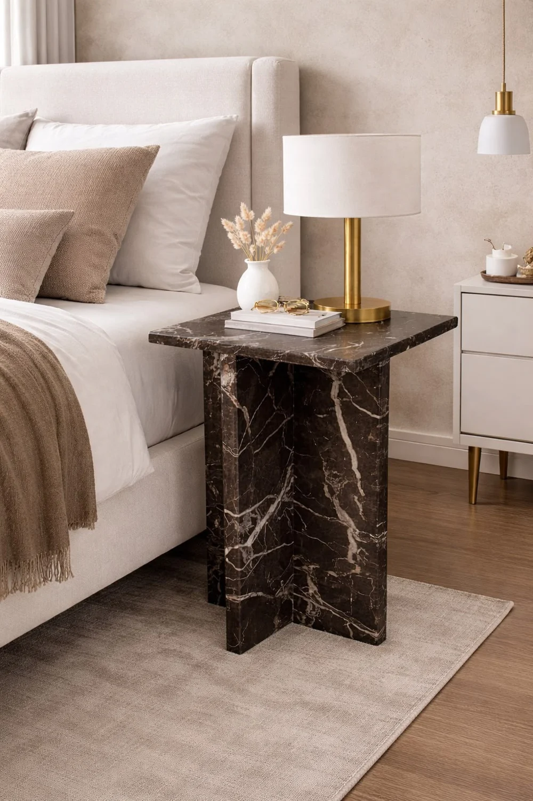

The Stone Atelier · Creative direction 01
Stone,given purpose.
A study in natural character,
considered form and the maker's hand.

01 / Foundation
A palette borrowed
from stone.
Warm surfaces. Deep, quiet contrast. A trace of bronze. The material supplies the colour; the interface gives it room.
#F4F0E8#E6DED1#FCFAF6#252821#626157#806342Interface colours only. These swatches do not represent available marble varieties.
02 / Typography
Character, with clarity.
An expressive editorial serif for the story. A precise, readable sans-serif for everything you need to know.
Cormorant Garamond
Display / Regular & MediumThe beauty
is in the detail.
Manrope
Body / Regular, Medium & SemiboldMarble tables, basins and objects.
Shaped for the way you live.
Collection 01 / Tables & everyday objects
03 / Component language
Quietly useful.
Clear actions, generous touch targets and thoughtful states. Every detail should make the next step feel natural.
Actions / primary, secondary, text
Discover the materialSpecimens: buttons demonstrate focus and navigation.
Selection / native radio controls
Light tone selected. No material recommendation is implied.
Disclosure / progressive detail
How will material choices be presented?
Through approved sample and slab imagery, named finishes and verified application guidance. Natural variation will be explained beside each selection.
What happens when specifications are unknown?
The interface will invite a discussion with the studio. Dimensions, stock, pricing and lead times are never generated from the appearance of an image.
Form / default, validation & feedback
04 / Image language
Let the stone speak.
Generous crops. Honest colour. An emphasis on silhouette, surface and the meeting of the two.
Supplied visual references, shown for internal art-direction review. These are descriptive editorial labels, not confirmed product names, stone identities or installed project claims.
05 / Composition & rhythm
Space is part
of the design.
A twelve-column canvas becomes eight, then four. The hierarchy stays deliberate at every size.
Room to breathe.
24 px mobile gutters. Fluid editorial spacing. Short measures for text and generous frames for the object.
Motion with restraint.
A gentle image response. A clear state change. Native scrolling and reduced-motion support throughout.
Clarity, always.
Visible keyboard focus. Meaningful labels. Textual errors. A 48 px minimum button height.
06 / Process component
A considered sequence.
Timeline specimen using our design phases. The future making timeline will use the same numbered rhythm.
Discover
Inspect the assets and establish what is known.
Define
Give the brand a distinctive and truthful direction.
Structure
Connect buyer intent to a useful next step.
Design
Create a consistent visual and interaction language.
The foundation for what comes next
Considered in every detail.
This review completes the foundation stage. Homepage design and implementation begin in Phase 5.
Read the strategy documents